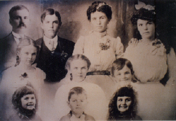

ANNIE LAMB HASSELL
(An Autobiography)

Introduction:
I was born at Mesa, Ariz. Dec. 7, 1892. My parents were good Latter Day Saints. They provided a good home for their family. We were farmers and besides housework we children had our chores about the farm also.
When I was 13 years old we moved to Bluewater, New Mex. My father homesteaded and built up a cattle ranch. With my grandfather's families adding to the few families there, a ward was established and a log church house was built. The county furnished a teacher and school was held there also.
All who received more than a seventh grade education went to the church academy at St. Johns, Arizona. I was fortunate to get parts of three years there, and also took piano lessons. The third year at Xmas time I returned home. My parents had gone into the general mercantile business and I went to work helping in the store. Mayner came to Bluewater that spring and we were married in the fall.
 Most of my activities in the church have been in primary work. I taught in Sunday school for about 20 years. I have also been Sunday School and ward organist.
Most of my activities in the church have been in primary work. I taught in Sunday school for about 20 years. I have also been Sunday School and ward organist.
Crowning Moments of My Life:
The first I remember of importance - when I was three and a half years old my brother was born.
When I was baptized.
When we bought our first Surry, or buggy, and a span of matched black horses our father took us seven miles to our first circus.
The day my father returned from his mission.
As a child I overheard a neighbor tell my mother something nice about me.
In school when I'd beat my class in a spelling match, or get the best grade in class work.
When Dot wrote to my parents while they were away, that I was worth my weight in gold.
When a young girl I was ask to play the 1st song for Stake conference as the organist was late.
 When I made my wedding cake and it turned out perfectly.
When I made my wedding cake and it turned out perfectly.
Each time a babe came into our home.
When Ida graduated with highest honors.
When Lee & Ida would come home from school and tell of receiving the prize for best boy & girl student.
Once when after a mothers' day program, Mayner told me I was the best looking mother there. Of course I knew better, but the kids agreed with him.
When Collins returned from his mission.
When Ray returned from overseas.
When I saw Clayton married, being the only one of my children I had had that privilege.
When I'd hear Anna sing.
When each of my boys received advancement in the priesthood.
Each grandchild given us.
When Grace honored me at a primary meeting. The only public honor I ever received.
When the last of our children went through the temple.
 I Remember:
I Remember:
When Collins was three years old, and we were living in Gallup. He had ask me what made the sun, moon & stars shine, I'd told him Heavenly Father. So one night as he was standing in the door, he said, "Heavenly Father turn on the lights." It was at that instant the city street lights went on. He turned back into the house well satisfied Heavenly Father had heard his request.
How I appreciated the good manners my children always displayed when company came into our home. They did everything they knew how to to be helpful to me and our guests.
I remember how when Mayner & I would be gone all day, usually upon arriving home we'd find the house spick & span. A real overhauling.
I have never had a son-in-law or daughter-in-law say an unkind word to me. I wish I could say the same.
I remember in the year 1919 we were living in the Zuni Mountains, working for John Ervin. We had three small children at that time. I cooked for the ranch hands and Mayner did farm work for which we received $75.00 a month with house and food furnished. There was a store, the house we lived in at the side of the store, Mr. Ervin's home & a big new store house, besides the outer buildings all in a group. This night I am thinking of, a dance was being held in the new storehouse. Mayner had worked at the store until about 10 o'clock and had just come home and got to bed, when we heard a great commotion outside and a light glared into our bedroom. Mayner jumped out of bed and into his clothes in seconds time. Our house was, about 25 or 30 feet from the fuel store between which stood a half dozen barrels of gas. Someone had been getting gas, and from spilt gas started a fire. I looked out over the scene. People from the dance just standing watching the fire spread among the barrels. Women screaming. Mayner went in among the barrels and began moving one out. Some men come to take them as he rolled them out one at a time. I could see the last three barrels beginning to bulge at the top. I wanted to scream for him to get away from them but I couldn't. Seemed like hours as awful thoughts went through my mind. If those barrels of gas exploded the whole place & people would be one raging fire, but the last barrel was moved at last. Next morning I knew I didn't just see things. Three of the barrels were bulged terribly at the top. What seemed strange to me was that not one other man would go into that heat and roll out those barrels.